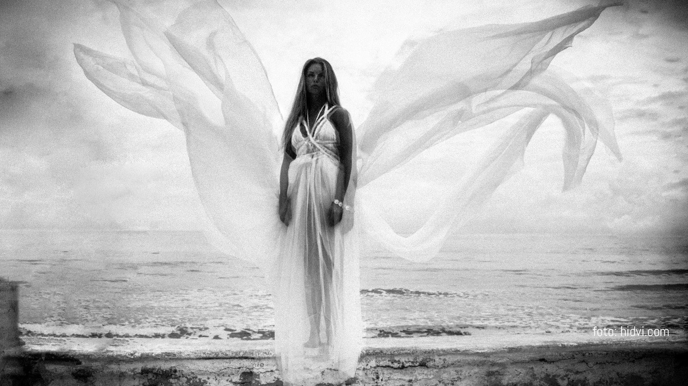
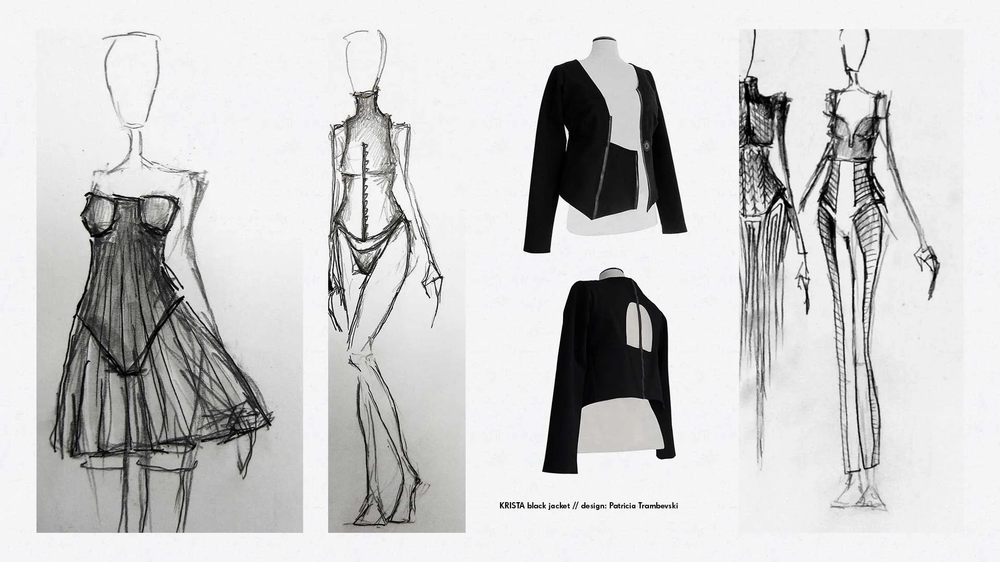
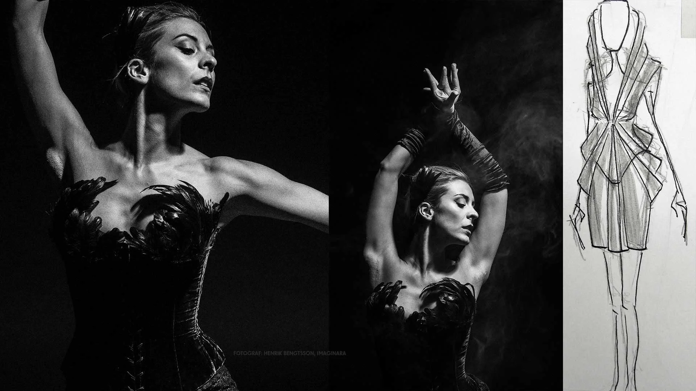

Kläder med
något att säga.
Från kommersiella plaggidéer till uttrycksfulla kostymer för scen och bild.
Prata med Patricia

En kollektion
börjar i en känsla.
Ready-to-wear i frilanssamarbeten med företag och varumärken. Arbetet fokuserar på tidiga koncept, trendtolkning, målgrupp och kommersiella plaggidéer med en egen karaktär.
Patricia arbetar med att tolka trender för varumärkets målgrupp och utveckla ett sammanhållet koncept inför kollektionen.
Prata om en kollektion
Uttryck som
tar scenen.
Skisser och skapelser för musik, foto, film, teater, dans, reklam och särskilda tillfällen. Projektets uttryck styr designen, med utrymme för experiment och nya metoder.
Från en första skiss till kostymens form och rörelse. Varje samarbete tar avstamp i det som ska berättas.
Berätta om din produktionSkiss, rörelse
och uttryck.
Bildurval ur ISELAs portfolio. Scenbilder: fotografer som anges i originalmaterialet är Hidvi, Sonja Hesslow och Jonas Krantz. Bildmaterialets befintliga fotografmärkningar är bevarade.